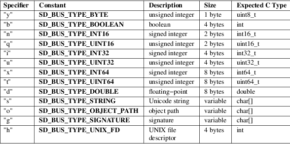

sd_bus_message_append_basic − Attach a single field to a message
#include <systemd/sd−bus.h>
|
int sd_bus_message_append_basic(sd_bus_message *m, char type, const void *p); |
sd_bus_message_append_basic() appends a single field to the message m. The parameter type determines how the pointer p is interpreted. type must be one of the basic types as defined by the Basic Types [1] section of the D−Bus specification, and listed in the table below.
Table 1. Item type specifiers

The value of the parameter is copied into a memory area held by the message object, stays in the possession of the caller and may hence be freely changed after this call without affecting the bus message it has been added to. If type is "h" (UNIX file descriptor), the descriptor is duplicated by this call and the passed descriptor stays in possession of the caller.
For types "s", "o", and "g", the parameter p is interpreted as a pointer to a NUL−terminated character sequence. As a special case, a NULL pointer is interpreted as an empty string. The string should be valid Unicode string encoded as UTF−8. In case of the two latter types, the additional requirements for a D−Bus object path or type signature should be satisfied. Those requirements should be verified by the recipient of the message.
On success, this call returns 0 or a positive integer. On failure, it returns a negative errno−style error code.
Errors
Returned errors may indicate the following
problems:
−EINVAL
Specified parameter is invalid.
−EPERM
Message has been sealed.
−ESTALE
Message is in invalid state.
−ENXIO
Message cannot be appended to.
−ENOMEM
Memory allocation failed.
These APIs are implemented as a shared library, which can be compiled and linked to with the libsystemd pkg-config(1) file.
systemd(1), sd-bus(3), sd_bus_message_read_basic(3), sd_bus_message_append(3), The D−Bus specification [2]
|
1. |
Basic Types |
https://dbus.freedesktop.org/doc/dbus-specification.html#basic-types
|
2. |
The D-Bus specification |
https://dbus.freedesktop.org/doc/dbus-specification.html